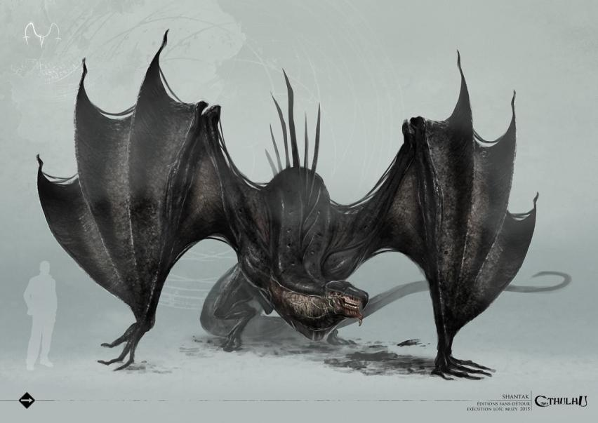

Страна Снов полна страшных и причудливых тварей, и даже в горных хребтах, отделяющих плато Ленг от остального мира, обитают жуткие крылатые создания — шантаки. Часто их называют птицами, но это не совсем верно. Тело шантаков покрыто не перьями, а чешуей, что указывает на их сходство с рептилиями.
Шантаки опасаются слуг Ноденса — ночных призраков, и служат Древним — Ньярлатхотепу и Хастуру. Известно, что они обладают собственным языком, а значит, разумны и способны понимать других. Более того, их языком владеют слуги Древних из числа людей, которые используют этих жугких существ для передвижения.
Шантаки имеют ярко выраженные особенности. Во-первых, их голова напоминает лошадиную. Во-вторых, шантаки умеют путешествовать между мирами. В-третьих, они служат охранниками страшного плато Ленг.
Известно также, что Рэндольф Картер, разыскивавший Кадат в мире Снов, повстречал там шантаков и даже путешествовал с их помощью.
Введены Г. Ф. Лавкрафтом в повести «Сновидческие искания неведомого Кадата» (The Dream-Quest of Unknown Kadath, 1927).
